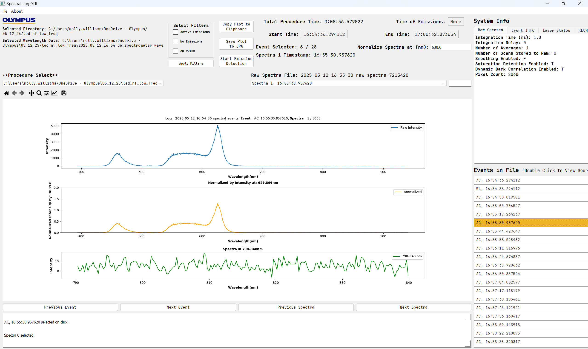
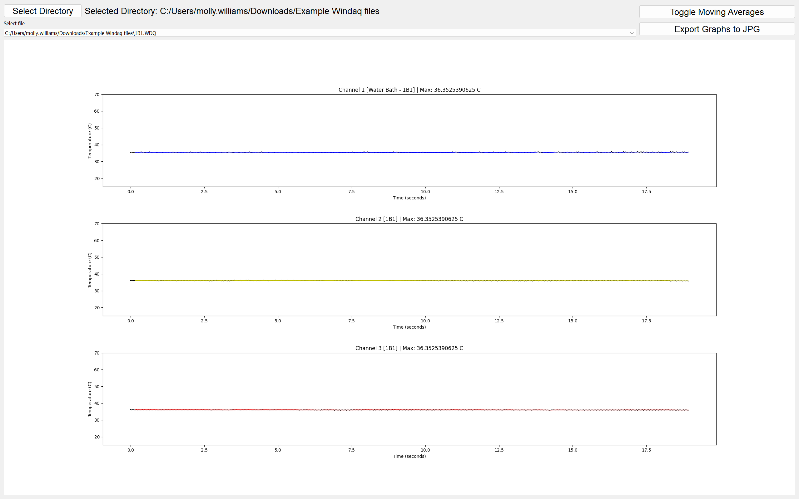
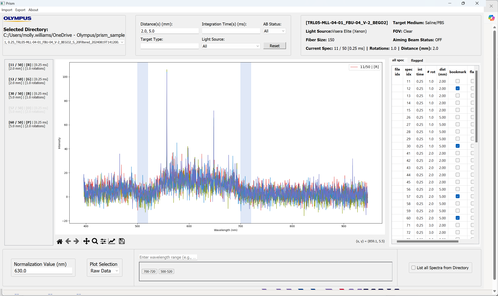

hi i'm
molly
computer science and math student


hi i'm
computer science and math student
molly


from berlin, connecticut

northeastern university, boston, ma, khoury college of computer sciences
- candidate for a B.S. in computer science, minor in mathematics
- northeastern honors student
- fields of interest: software development and design, project management, app development, artificial intelligence,
machine learning, R&D, medical devices
browse my projects
- Developed a stock trading application that allows users to build and manage portfolios, simulating trades and performing custom analyses based on current stock data.
- Integrated external APIs to fetch up-to-date stock prices, historical data, and market trends.
- Utilized Java, Swing, and IntelliJ for application development.


- Designed a web-app that lets users discover trending meals in Boston, curating personalized grocery lists based on their likes, as well as YouTube tutorials, recipes, etc.
- Developing using JavaScript/TypeScript, React.js, and Node.js for front-end and back-end development
- Project presented in Northeastern's OASIS Coding Club
- Developed a standalone tool to visualize and analyze spectral data from surgical laser system logs.
The tool enabled researchers to inspect wavelength emissions during procedures, apply normalization and filtering techniques, and interpret laser-tissue/stone interactions more effectively.
- View spectral wavelength data: Raw data, normalized, emission data.
- Interactive filters to isolate and highlight relevant emission ranges

- Built a synchronization utility tool that aligns spectral data logs, surgical video recordings, and laser system events.
Implements an algorithm to detect aiming beam pulses or laser emissions to establish sync points, enabling researchers to navigate and annotate multimodal datasets in parallel.
- Pulse detection logic to find synchronization timestamps.
- Aligned spectral data and video frames for integrated analysis.
- Integrated annotation interface for marking key events during procedures.
- Improved accuracy of experimental documentation and data correlation.
- Created a temperature monitoring application that reads data from thermocouples via WINDAQ and displays live plots and moving averages.
The tool helped ensure thermal safety and supported quantitative temperature tracking in tissue samples.
- Real-time plotting of thermocouple sensor readings
- Integration with WINDAQ for data acquisition
- Export options for offline analysis
- Developed a spectral data processing and export tool tailored for machine learning applications.
The application allows researchers to visualize, normalize, and filter spectral data before exporting it in a clean CSV format for downstream ML workflows.
- Multi-spectrum visualization with flexible filters
- CSV export for training dataset creation
- Designed to support classification and prediction models
cell: (860)-877-7471